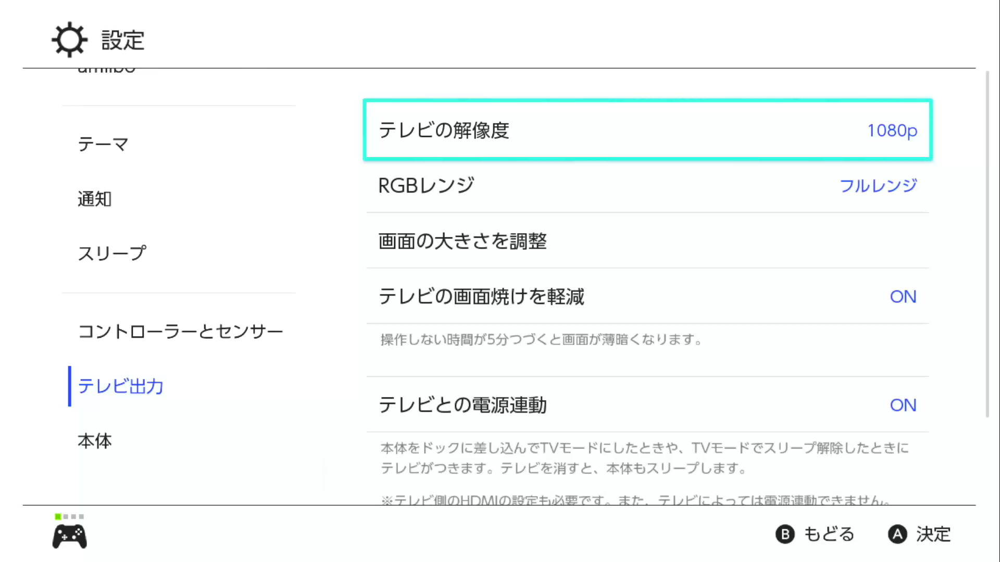
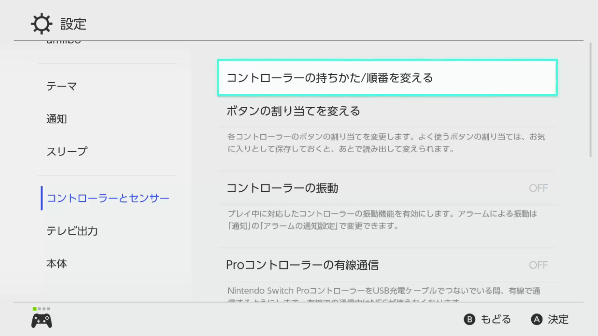
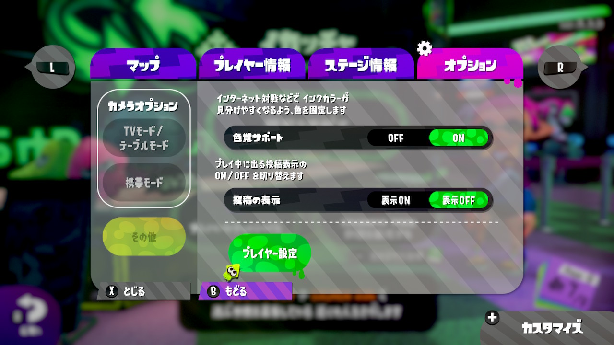
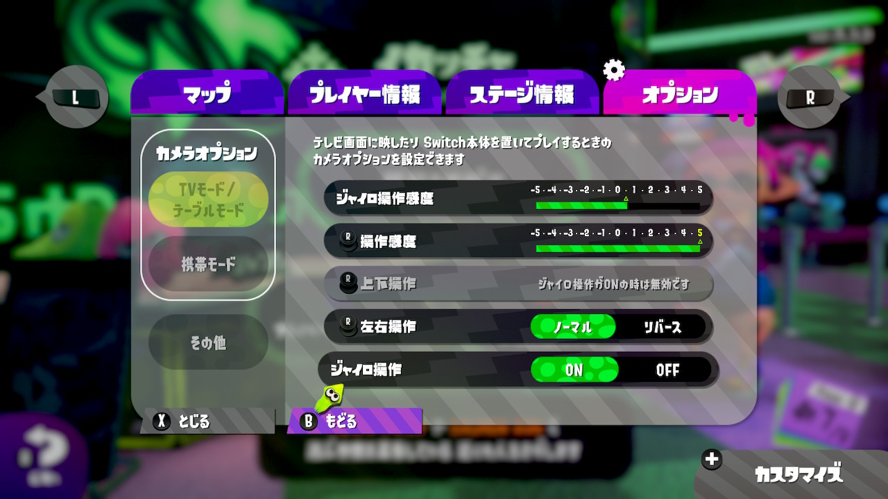

Nintendo Switch/Splatoon2の各種設定
私のNintendo SwitchやSplatoon2の設定を以下に示します。
本体設定 > テレビ出力
1080pとフルレンジを設定。正直あんまりよくわかっていません。
本体設定 > コントローラーとセンサー
振動は鬱陶しいのでOFF、有線通信はラグの原因となることがあるのでこれもOFF。
色覚サポート
色覚サポートをONにしています。これをONにすると、サーモンランの自インクが青で固定されます。
青インクで固定すると「夜のときの自インクの塗りが分かりにくい」「他の人の録画データと見比べたときに色が違って違和感がある」などのデメリットがありますが、「グリルのタゲを示す赤い線が見やすい」「目が疲れにくい」などのメリットがあります。
操作感度
ジャイロ+0.5、右スティック+5です。
大雑把なエイムや視点移動は右スティックで行います。一気にガガッと動かせるように、最大の+5。もっと上があってもいいくらいです。
ジャイロは精密なエイムに使うので、あんまり高いと困るということで、+0.5。